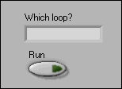
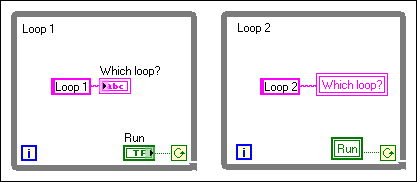

You can use a local variable to update a single front panel indicator from more than one location on the block diagram. For example, if you have a VI with two While Loops, you can update a front panel indicator to display which loop is currently executing. The following illustration shows the front panel for such a VI.

On the block diagram, place the indicator terminal in Loop 1 and a local variable instance of the indicator in Loop 2, as shown in the following illustration. Notice that this example also uses a local variable instance of the Run control to control the execution of both While Loops. You also can use a local variable to allow a single front panel button to control two parallel While Loops in a single VI. A wire does not connect the loops, and they execute simultaneously.

| Note You cannot associate a local variable with a Boolean control or indicator that has its mechanical action set to latch when pressed or released. |